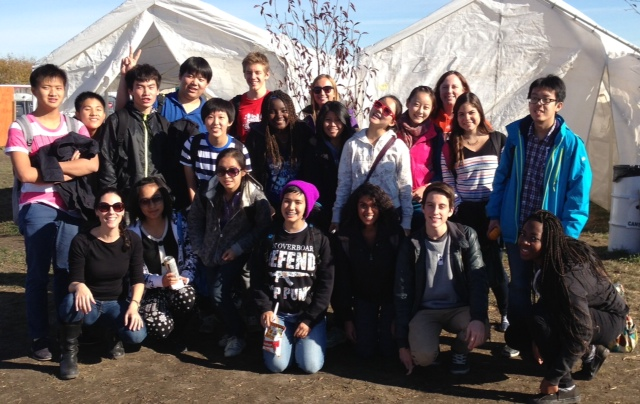
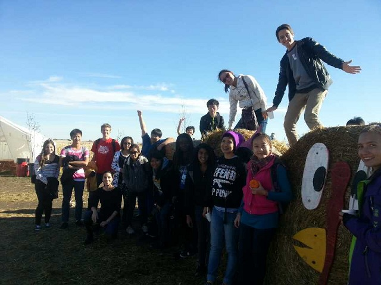
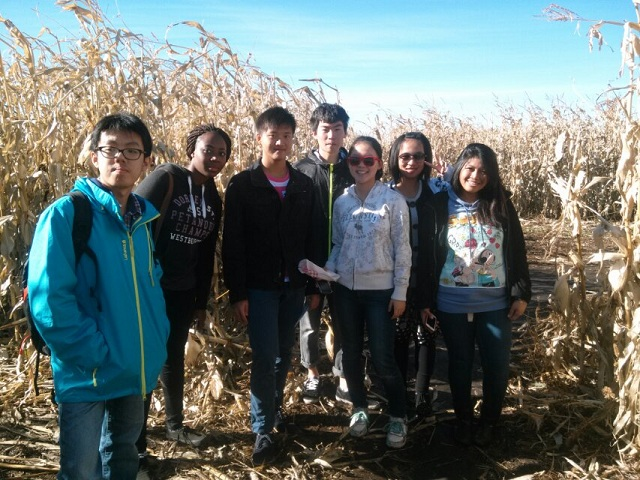
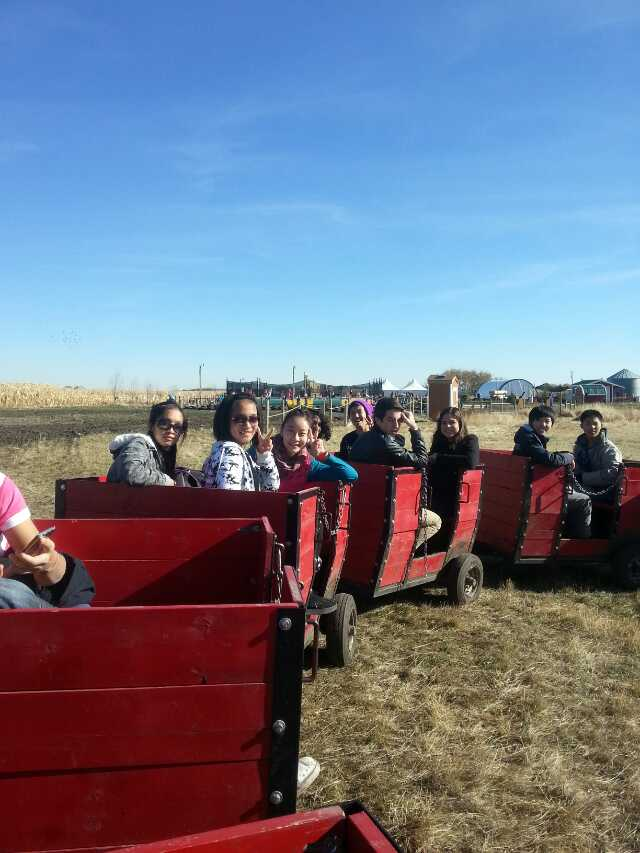

International Students Program at William Aberhart High School
At William Aberhart we have a thriving International student community. We offer various exciting opportunities for students to come to Aberhart and study. Some of the reasons that we are unique include:
- Trained and professional Aberhart staff meet with each new international student and family to discuss classes and student needs
- International students are greeted by Student-Ambassadors who help new International students find their classes, meet their teachers, and learn about the school
- Classes at Aberhart are built around the needs of the students and are constantly being reviewed and evaluated
- We offer a wide variety of ESL classes
- International students at Aberhart are taken on several outings throughout the school year such as Calgary ice walks, Calgary Corn Maze, Glenbow Museum
- International students at Aberhart have a teacher-coordinator who stays in touch with overseas-parents, meets with guardians regularly, communicates student needs to other teachers in the building and encourages and helps International students get involved in Sports andClubs at school
- William Aberhart is conveniently located close to a major C-Train public transportation station.
- William Aberhart is walking distance from the University of Calgary
For more information on our International Student program at William Aberhart, contact Deborah Blayways at deblayways@cbe.ab.ca
   